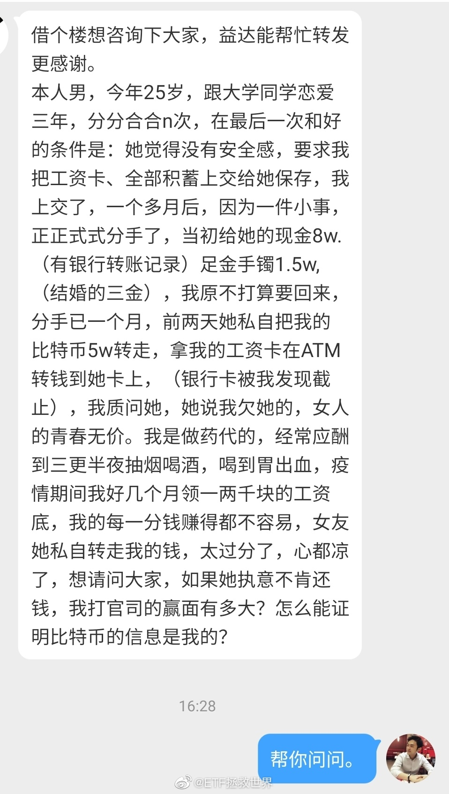

有没有法律学的好的朋友，帮帮孩子吧。这钱还能要回来吗。
PS，看到“青春无价”四个字我笑出来了。你偷钱就好好偷钱，怎么还搁这物化女性？女性不是附属，不是玩物！男女已经平等了！什么年代了，怎么还拿自己换钱？
在一起你情我愿，互相爱慕互相付出，分手了互相道一声珍重。为什么总有人想把女性搞得低人一等，生气！
PS，看到“青春无价”四个字我笑出来了。你偷钱就好好偷钱，怎么还搁这物化女性？女性不是附属，不是玩物！男女已经平等了！什么年代了，怎么还拿自己换钱？
在一起你情我愿，互相爱慕互相付出，分手了互相道一声珍重。为什么总有人想把女性搞得低人一等，生气！
- 